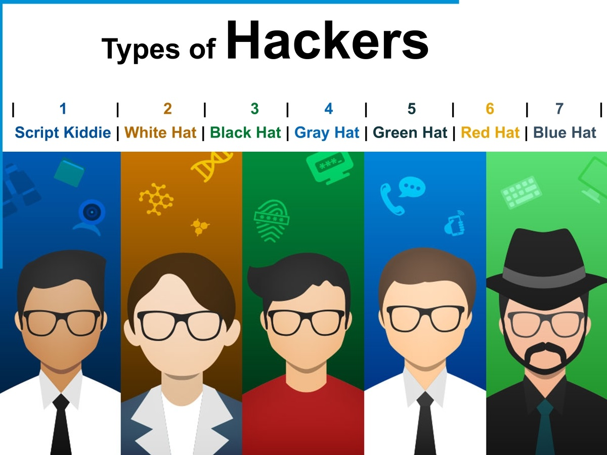
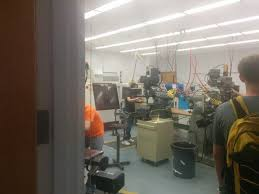
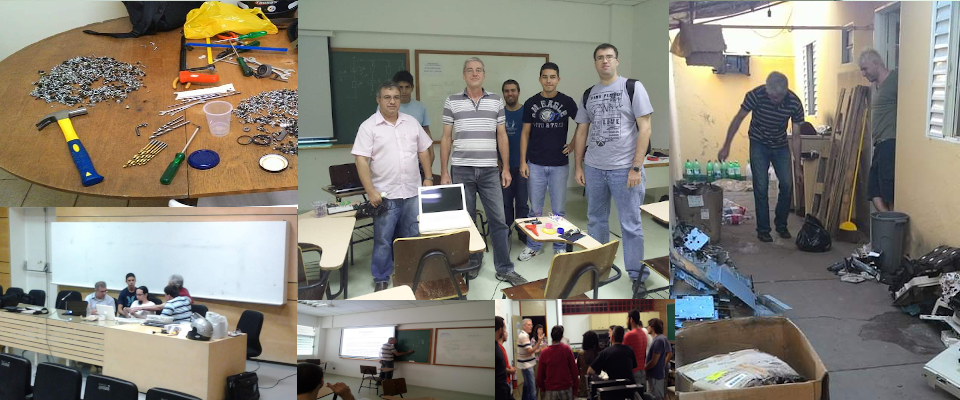

THS - Triângulo Hackerspace
Como funciona e o que é o Triângulo Hackerspace (THS)
Palestrante: Rogério Fontes / @rogeriofontes
Sobre o palestrante:
APAIXONADO EM MANEIRAS E FORMAS ÁGEIS DE CRIAR CÓDIGO FONTE. PROGRAMANDO SEMPRE TOMANDO UM BOM CAFÉ E ESCUTANDO UM BELO E PESADO ROCK`N ROLL. TRABALHA A MAIS DE 10 ANOS COM JAVA E LINUX, PASSANDO POR ANDROID, PYTHON, PHP E AGORA COM O CORAÇÃO NO ANGULAR.JS E NODE.JS. PROFESSOR UNIVERSITÁRIO DE REDES DE COMPUTADORES, JAVA E DISPOSITIVOS MÓVEIS. JUGLEADER E CO-FUNDADOR DO UAIJUG (GRUPO DE USUÁRIOS DO TRIÂNGULO MINEIRO) E DO TRIÂNGULO HACKERSPACE. ALÉM DISSO AVENTURANDO COMO EMPREENDEDOR E ARQUITETO Everis E APAIXONADO POR ESTUDOS MÚSICAIS.

O que é ser um Hacker?
O que é ser um Hacker?
O termo hacker foi cunhado anos 1950 nos Estados Unidos.
O que é ser um Hacker?
No (MIT), onde a palavra teria surgido, os primeiros hacks eram trotes, brincadeiras. Em um deles, estudantes do instituto colocaram uma réplica de um carro de patrulha do campus no topo do prédio principal.
O que é ser um Hacker?
Ao longo do tempo, o termo ficou associado a programadores de computador, que começavam a ganhar espaço no MIT e em outras partes do mundo. Para esses pioneiros, um hack era uma façanha de programação. Esses feitos eram muito admirados por combinar conhecimento específico e instinto criativo..
Para saber mais:
Tipos de Hackers
Seja um hacker etico (White Hat).
Em remuso:
Alguém que gosta de estudar a fundo determinado assunto;
Cultura Hacker:
O que é um hackerspace?
Um hackerspace ou hackspace, também conhecido como hacklab, makerspace ou creative space é um local real com o formato de um laboratório comunitário que segue a ética hacker, tendo espírito agregador, convergente e inspirador. Wikipédia
Primeiro Hackerspace:
Primeiro Hackerspace Brasileiro:
Hacker Clube, localizado na cidade de São Paulo, fundado em 2009
List de Hackerspaces:
O que é o Triângulo Hackerspaces:
Somos um Grupo de entusiastas com o intuito de prover um ambiente para a comunidade, onde a mesma poderá utiliza-lo para agregar e disseminar conhecimento. Para fazermos isso, ensimanos e criamos projetos baseados Arduíno, Raspberry PI entre outros utilizando IoT. Através de Cursos, Workshops, trainamentos, pesquisas e colaboração entre os Associados.
O que é o Triângulo Hackerspaces:
Data de Fundação: 17/02/2013
Fundadores:
Estamos na lista oficial:
Estamos na lista oficial:
Agora em Uberaba :)
Como funciona:
- É um OpenSpace onde o pessoal fazem reuniões para troca de conhecimento;
- O hackerspace é mantido pelos próprios membros, com mensalidades, doações e outras formas de arrecadação de fundos;
- O hackerspace é independente, sem ligação formal com nenhuma empresa, entidade ou universidade. Isto para ter liberdade de desenvolver e livre ao espaço para qualquer interessado, a qualquer momento;
- Deve ser multidisciplinar, ou seja, ter participantes de várias áreas de conhecimento, como engenharia, hardware, eletrônica, software, desenvolvimento, Software Livre, segurança da infomação e, principalmente, pessoas de outras áreas como artes digitais, música, robótica, espaçomodelismo, bioengenharia ou robótica, por exemplo;
- Como o espaço é livre, o hackerspace deve permitir o desenvolvimento de projetos próprios de seus membros ou projetos comunitários e OpenSource (O THS apoia fortemente Open Source);
- O hackerspace também deve servir como um espaço de encontro para as pessoas socializarem, ensinarem e aprenderem, através de atividades abertas a todos os interessados.
Como pensamos e agimos:
- Propriedade e gerência sob responsabilidade de seus membros, num espírito de igualdade.
- É uma organização sem fins lucrativos e aberto ao mundo exterior em uma periodicidade (semi) regular.
- Compartilha ferramentas, equipamentos e idéias, sem discriminação.
- Uma forte ênfase na tecnologia e na inovação.
- Tem um espaço compartilhado, como um ponto central da comunidade.
- Um forte espírito de criatividade e ciência, com base na experimentação, erro e livre compartilhamento de informações.
O que Incentivamos:
- Tecnologia.
- Auto-didata.
- Criatividade.
- Contruir *DIY.
- Inovação.
Compartilhar conhecimento e Auto Aprendizado

O que não fazemos
"Vcs invadem Facebook ou usam camera de segurança para inspionagem?" THS: Não
Como funciona o Espaço Físico:
- Independente.
- Monitorado.
- Livro Acesso (Com Key-Holders).
- Comunitário.
- Festivo (Churrasco, THS Beer, THS Open Tech (Pizza).
Doações
Todas as doações tem prestação de Contas
Eventos e Projetos
